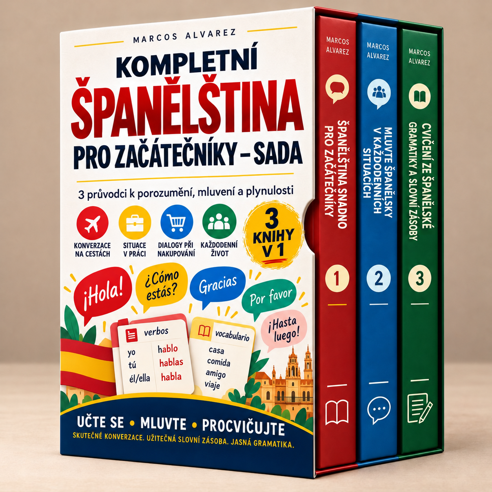

Začni se základy, procvičuj každodenní rozhovory a upevni si gramatiku i slovní zásobu.
Načítání studijních materiálů…
Zapni JavaScript pro použití členské sekce nebo otevři knihy přímo pomocí odkazů níže.
Napsat e-mail